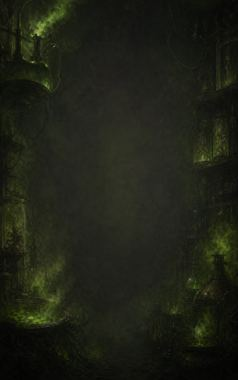
Technique trees › Crafting arts
Mad science
20 techniques in the Ninjutsu tab.
Open to every ninja. How high a ninja can go depends on their ninja build.
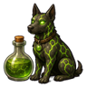
Alchemical Companion A
Passive. A-rank passive. Mad science: the alchemist's bonded animals are faster, tougher and hit harder.
Alchemical Companion A
Passive. A-rank passive. Mad science: the alchemist's bonded animals are faster, tougher and hit harder.
A-rank passive. Mad science: the alchemist's bonded animals are faster, tougher and hit harder.
Alchemical Discernment C
Passive. C-rank passive. Mad science: bulging, glistening eyes that see more.
Alchemical Discernment C
Passive. C-rank passive. Mad science: bulging, glistening eyes that see more.
C-rank passive. Mad science: bulging, glistening eyes that see more.
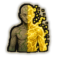
No Mere Matter A
Passive. A-rank passive. Mad science: the body turns partly to energy: less damage and poison.
No Mere Matter A
Passive. A-rank passive. Mad science: the body turns partly to energy: less damage and poison.
A-rank passive. Mad science: the body turns partly to energy: less damage and poison.
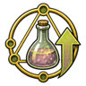
Improved Alchemy C
Passive. C-rank passive. +10% alchemy speed.
Improved Alchemy C
Passive. C-rank passive. +10% alchemy speed.
C-rank passive. +10% alchemy speed.
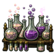
Efficient Alchemist A
Passive. A-rank passive. +20% alchemy speed.
Efficient Alchemist A
Passive. A-rank passive. +20% alchemy speed.
A-rank passive. +20% alchemy speed.
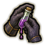
Cautious Crafter C
Passive. C-rank passive. Never poisons themselves at work: +10% toxic resistance.
Cautious Crafter C
Passive. C-rank passive. Never poisons themselves at work: +10% toxic resistance.
C-rank passive. Never poisons themselves at work: +10% toxic resistance.
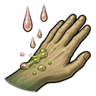
Acid Resistance C
Passive. C-rank passive. Takes 20% less damage from burns and acid.
Acid Resistance C
Passive. C-rank passive. Takes 20% less damage from burns and acid.
C-rank passive. Takes 20% less damage from burns and acid.
Alertness C
Passive. C-rank passive. Notices what others miss: slightly sharper sight and hearing.
Alertness C
Passive. C-rank passive. Notices what others miss: slightly sharper sight and hearing.
C-rank passive. Notices what others miss: slightly sharper sight and hearing.
Mechanical Aptitude C
Passive. C-rank passive. A knack for machines and gadgets: +10% construction speed.
Mechanical Aptitude C
Passive. C-rank passive. A knack for machines and gadgets: +10% construction speed.
C-rank passive. A knack for machines and gadgets: +10% construction speed.
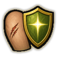
Minor Damage Reduction C
Passive. C-rank passive. Minor wounds barely register: 3% less damage.
Minor Damage Reduction C
Passive. C-rank passive. Minor wounds barely register: 3% less damage.
C-rank passive. Minor wounds barely register: 3% less damage.
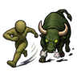
Sidestep Charge C
Passive. C-rank passive. Dodges charging enemies: +4 melee dodge.
Sidestep Charge C
Passive. C-rank passive. Dodges charging enemies: +4 melee dodge.
C-rank passive. Dodges charging enemies: +4 melee dodge.
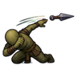
Skirmishing C
Passive. C-rank passive. Ducks and weaves while shooting back: +2 shooting accuracy.
Skirmishing C
Passive. C-rank passive. Ducks and weaves while shooting back: +2 shooting accuracy.
C-rank passive. Ducks and weaves while shooting back: +2 shooting accuracy.
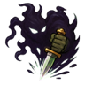
Cheap Shot C
Passive. C-rank passive. Strikes where it hurts: +3 melee hit chance.
Cheap Shot C
Passive. C-rank passive. Strikes where it hurts: +3 melee hit chance.
C-rank passive. Strikes where it hurts: +3 melee hit chance.
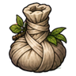
Compress B
Passive. B-rank passive. Quick compresses for many wounds at once: +15% tend speed.
Compress B
Passive. B-rank passive. Quick compresses for many wounds at once: +15% tend speed.
B-rank passive. Quick compresses for many wounds at once: +15% tend speed.
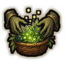
Skilled Harvester B
Passive. B-rank passive. +10% plant harvest yield and +10% plant work speed.
Skilled Harvester B
Passive. B-rank passive. +10% plant harvest yield and +10% plant work speed.
B-rank passive. +10% plant harvest yield and +10% plant work speed.
Unbound Mind B
Passive. B-rank passive. Talks their way out of charms and compulsions: lower psychic sensitivity.
Unbound Mind B
Passive. B-rank passive. Talks their way out of charms and compulsions: lower psychic sensitivity.
B-rank passive. Talks their way out of charms and compulsions: lower psychic sensitivity.
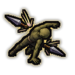
Sharp Instinct A
Passive. A-rank passive. Can't be caught off guard: +5 melee dodge.
Sharp Instinct A
Passive. A-rank passive. Can't be caught off guard: +5 melee dodge.
A-rank passive. Can't be caught off guard: +5 melee dodge.
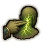
Paralyzing Strike C
Chakra 15. C-rank. Strike a nerve centre of an enemy in reach: a long stun.
Paralyzing Strike C
Chakra 15. C-rank. Strike a nerve centre of an enemy in reach: a long stun.
C-rank. Strike a nerve centre of an enemy in reach: a long stun.
| Rank | Chakra | Cooldown | Class level |
|---|---|---|---|
| C | 15 | 1 hour | 5 |
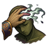
Deadly Induction B
Chakra 35. B-rank. Touch one person and put them into a death-like coma for a while. Works on enemies and on patients alike.
Deadly Induction B
Chakra 35. B-rank. Touch one person and put them into a death-like coma for a while. Works on enemies and on patients alike.
B-rank. Touch one person and put them into a death-like coma for a while. Works on enemies and on patients alike.
| Rank | Chakra | Cooldown | Class level |
|---|---|---|---|
| B | 35 | 2.4 hours | 9 |

Spit Poison A
Chakra 55. A-rank. Spit a jet of poison: a cloud of toxic gas bursts around the spot. Hits everyone in it, allies too.
Spit Poison A
Chakra 55. A-rank. Spit a jet of poison: a cloud of toxic gas bursts around the spot. Hits everyone in it, allies too.
A-rank. Spit a jet of poison: a cloud of toxic gas bursts around the spot. Hits everyone in it, allies too.
| Rank | Chakra | Cooldown | Class level |
|---|---|---|---|
| A | 55 | 1.2 hours | 13 |
Chakra is the technique's base cost, the number in its def. In play it is multiplied by the pawn's chakra energy usage multiplier, which traits (chakra artificer 90%, volatile conduit 110%), World of Naruto genes and jutsu enhancements change, so the technique window can show a slightly different number for each ninja. Cooldowns are in-game time, as the technique window shows them, and the pawn's cooldown stat shortens or lengthens them. World of Naruto gives every ninja a base of 100 maximum chakra; genes and traits change it.